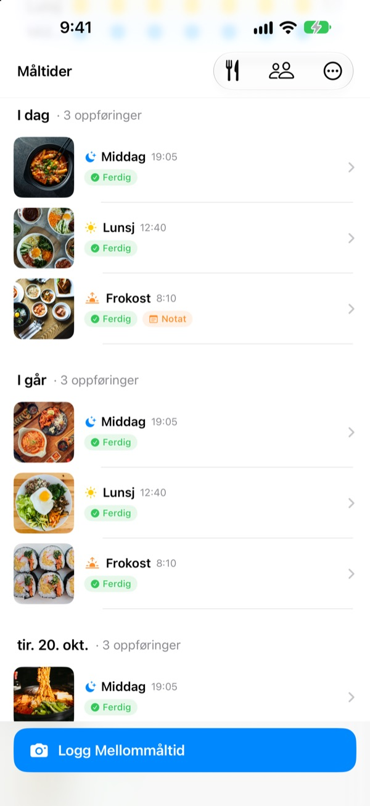
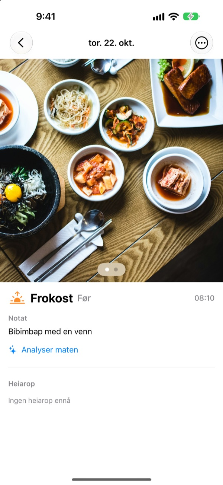
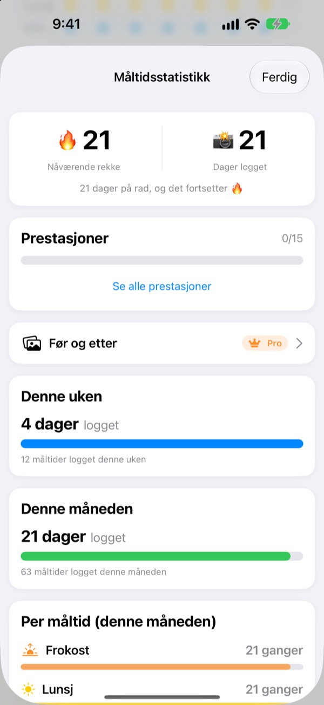
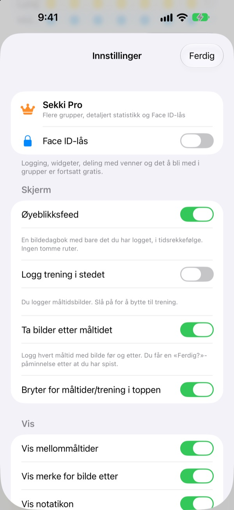

Ett bilde før du spiser.
Så er det logget.
Sekki ser når bildet ble tatt, og legger det under frokost, lunsj, middag eller mellommåltid. Logg bare ett måltid om dagen, så fortsetter rekken.
Logging, statistikk, widgeter og deling med venner er gratis.

Prøv selv
Velg et klokkeslett og trykk på loggknappen. Som i appen viser knappen allerede måltidet for det tidspunktet.
Har du gitt opp en matdagbok etter tre dager?
Du hopper over frokosten, glemmer middagen, og de tomme feltene begynner å irritere til du sletter appen. Sekki har ingen tomme felt. Bare måltidene du logger, samler seg i rekkefølge, og ett bilde er nok til at dagen teller.
Ta bildet, så er måltidet på plass
Ut fra tidspunktet legger Sekki bildet under frokost, lunsj, middag eller mellommåltid. Legg til før- og etterbilder, logg uten bilde eller skriv et notat.
Maten gjenkjennes gratis på enheten, og bildene dine forlater aldri telefonen.

En dagbok som aldri krymper
Ett måltid om dagen holder rekken, og totalt antall loggede dager går aldri ned. Uke- og månedsstatistikken viser hvor mange dager og måltider du har logget, ikke en prosent.
Underveis samler du prestasjoner som 7 dager på rad og A-menneske.

Bare måltidene du velger, uten å åpne appen
Velg hvilke måltider du vil ha påminnelser om, og tilpass tidene til dagen din. Etter førbildet markerer du Ferdig rett fra varselet.
Logg også med Handlingsknappen, Siri, Snarveier eller en widget, og legg til venner med en kode for å heie på hverandre med emojier og kommentarer.

Kom i gang i tre steg
- 1
Velg måltidene dine
Første gang spør Sekki hvilke måltider du vil bli minnet på. Kan endres i Innstillinger.
- 2
Ett bilde før maten
Loggknappen viser allerede måltidet for nåværende tidspunkt. Trykk, ta bildet, ferdig.
- 3
Trykk når du er ferdig
Trykk Ferdig i varselet eller widgeten, eller legg til et etterbilde.
Logg uten å åpne appen
- Varsel
- Etter førbildet markerer du Ferdig rett fra varselet
- Widget på Hjem-skjermen
- Se dagens antall og måltidet du spiser nå, og trykk Ferdig
- Widgeter på låseskjermen
- Rektangulær, rund og på én linje
- Handlingsknapp · Siri · Snarveier
- Logg Ferdig med ett trykk eller én setning
- Lagre i Bilder
- Slå det på i Innstillinger for egne Sekki-album for måltider og trening
- Treningsmodus
- Trening holdes atskilt fra måltider, med månedens antall økter med ett blikk
Ferdig-knappen i widgeten krever iOS 17 eller nyere.
Logging er gratis. Sekki Pro går dypere.
Gratis
- Bildelogging med automatisk sortering, før- og etterbilder, notater
- Rekker, totalt antall dager, uke- og månedsstatistikk, prestasjoner
- Påminnelser om valgte måltider og Ferdig uten å åpne appen
- Widgeter, Handlingsknapp, Siri og Snarveier
- Del måltider og trening med venner, emojier og kommentarer
- Opprett én gruppe, bli med i så mange du vil
- Matgjenkjenning på enheten
Sekki Pro
- Flere grupper for familie, jobb eller treningsgjengen
- Sammenlign måltider fra for noen uker siden med i dag side om side
- Se hva du spiser oftest
- Lås appen med Face ID eller Touch ID
Års- eller månedsabonnement, eller ett livstidskjøp
Abonnementet fornyes automatisk med mindre det sies opp minst 24 timer før perioden er over. Si opp når som helst i Innstillinger > Apple-konto > Abonnementer. Tjenestevilkår: m1zz.github.io/RoutineCamera/nb/terms.html
Vanlige spørsmål
Hvor lagres bildene mine?
På enheten din. Slår du på Lagre i Bilder automatisk i Innstillinger, havner de også i Sekki-albumene i Bilder. Så lenge Del måltidene mine er på (det er på fra start), lastes de opp til iCloud slik at vennene du har lagt til, kan se dem. Slå det av i Innstillinger > Konto og deling.
Hvordan legger jeg til venner?
På Venner-skjermen deler du koden din på seks tegn og skriver inn vennens kode. Du kan lime inn flere koder samtidig, adskilt med komma.
Hvordan heier jeg på en venn?
Åpne et av vennens måltider og legg igjen en emoji eller en kort kommentar. Har vennen ikke logget noe ennå, trykker du på det tomme feltet for et lite dytt.
Ryker rekken hvis jeg hopper over et måltid?
Nei. Logg hvilket som helst måltid den dagen, mellommåltid inkludert, så fortsetter rekken. Selv om du hopper over en hel dag, går ikke totalt antall loggede dager ned.
Jeg får ikke varsler.
Sjekk i iOS-innstillinger > Varslinger at Sekki har lov til å varsle, og at enheten er logget på iCloud. Påminnelsestidene endrer du i appens innstillinger.
Sender matgjenkjenningen bildene mine til en server?
Nei. Den kjører på enheten, så bildene forlater aldri telefonen. Gratis og uten grense.
Hvordan sletter jeg kontoen og dataene mine?
Gå til Venner > Konto > Slett konto. Kontoen og måltidsdataene på serveren slettes og kan ikke gjenopprettes. Går noe galt, send oss en e-post.
Hvordan sier jeg opp abonnementet?
I Innstillinger > Apple-konto > Abonnementer. Det fornyes automatisk med mindre du sier opp minst 24 timer før perioden er over. Livstidskjøpet betales én gang.
Feil, ideer eller spørsmål om kontoen: skriv til leeo@kakao.com eller send DM til @lee25_ios på Instagram. Vi svarer som regel innen en dag eller to.